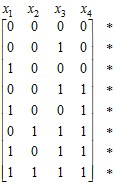
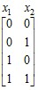
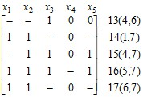

электронный
ресурс по учебной дисциплине
1-40 02 01 «Вычислительные машины, системы и сети»
|
||
| Оглавление | Программа | Теория | Практика | Контроль знаний | Об авторах | ||
Минимизация ДНФ
Задача минимизации ДНФ заключается в нахождении такой ДНФ для заданной булевой функции, которая содержала бы минимальное число элементарных конъюнкций или литералов. В первом случае результат решения называется кратчайшей ДНФ, во втором – минимальной.
18.1. Метод Квайна-МакКласки
Для описания метода введем некоторые понятия. В предыдущей главе было введено понятие формальной импликации: функция g имплицирует функцию f, т. е. g ⇒ f, если f имеет значение 1 везде, где это значение имеет g. В этом случае функция g называется импликантой функции f. Очевидно, что всякая элементарная конъюнкция, входящая в ДНФ некоторой функции, является импликантой этой функции. Дизъюнкция любого множества импликант является также импликантой.
Простая импликанта – это импликанта в виде элементарной конъюнкции, которая перестает быть импликантой при удалении любого литерала. Заметим, что удаление литералов до пустого множества приводит к конъюнкции, представляющей константу 1. Характеристическим множеством простой импликанты является максимальный интервал, т. е. интервал, целиком содержащийся в единичной области М1 функции f и не являющийся подмножеством другого интервала из М1.
Дизъюнкция всех простых импликант некоторой булевой функции называется сокращенной ДНФ этой функции.
Метод Квайна-МакКласки требует представление заданной булевой функции в виде совершенной ДНФ, т. е. такой ДНФ, каждая конъюнкция которой имеет ранг, равный числу аргументов функции. Процесс минимизации состоит из двух этапов: 1) нахождение множества всех простых импликант заданной функции; 2) выделение из этого множества минимального подмножества, составляющего ДНФ данной функции.
Первый этап выполняется путем применения операции простого склеивания над конъюнкциями. Пусть п – число аргументов заданной функции f. Рассмотрим последовательность множеств С0, С1, … , Ck, где С0 – множество конъюнкций ранга п, составляющих совершенную ДНФ функции f, Сi – множество конъюнкций ранга п – i, полученных путем склеивания конъюнкций из множества Ci – 1, и Ck – множество конъюнкций ранга п – k, где нет ни одной пары соседних конъюнкций и дальнейшее склеивание невозможно. Если склеиваемым конъюнкциям приписывать некоторую метку, то неотмеченные конъюнкции составят множество всех простых импликант.
Выразим этот процесс через операции простого склеивания над булевыми и троичными векторами. Булева функция при этом задана своим характеристическим множеством М1 – множеством элементов булева пространства, на которых она имеет значение 1. Удобно при этом сгруппировать исходные булевы векторы в подмножества, состоящие из векторов, имеющих одинаковое число единиц, и упорядочить эти подмножества по возрастанию (или убыванию) числа единиц в векторе. Тогда для каждого вектора соседние с ним векторы будут находиться только в соседних подмножествах в полученной последовательности.
В качестве примера рассмотрим булеву функцию, заданную следующей матрицей:
.
Используя для множеств векторов те же обозначения, что использовались для соответствующих конъюнкций, получим следующую последовательность матриц, где склеиваемые строки отмечены знаком «*»:
С0 = , С1 = , С2 = .
Сокращенная ДНФ, которая является результатом выполнения первого этапа минимизации, представится следующей матрицей:
.
Второй этап сводится к задаче кратчайшего покрытия, описанной в гл. 7. В данном случае множество М1 надо покрыть минимальным числом интервалов, представленных строками троичной матрицы, задающей сокращенную ДНФ.
Продолжая решать наш пример и пользуясь обозначениями из гл. 7, поставим задачу следующим образом. Заданы множество А = М1 и совокупность подмножеств В1, В2, … , Вт множества А в виде матриц
и .
Требуется выделить минимум подмножеств Bi, покрывающих все множество А. Перейдя к матричной форме этой задачи, получим следующую матрицу:
 .
.
Здесь надо выбрать минимальное количество строк так, чтобы каждый столбец имел единицу хотя бы в одной из них.
Строка В6 является единственной строкой, которая покрывает столбцы а6 и а7. Поэтому ее включаем в решение. Удалив эту строку и покрываемые ею столбцы, получим матрицу
 .
.
Строки В3 и В5 удаляются по правилу редукции, как покрываемые строками В1 и В4 соответственно. Из оставшихся строк строки В1 и В4 покрывают оставшиеся столбцы. Таким образом, искомое кратчайшее покрытие составляют строки В1, В4 и В6, а кратчайшая ДНФ, которая является также минимальной для заданной булевой функции, представляется матрицей
.
В алгебраической форме это решение имеет вид ¬х1¬х2¬х4 ∨ х1¬х2¬х3 ∨ х3 х4.
Иногда бывает возможность уменьшить размерность матрицы покрытия, выделив интервалы, входящие в любую безызбыточную ДНФ. Если некоторый элемент булева пространства mi ∈ M1 принадлежит лишь одному из максимальных интервалов U ⊆ M1, то очевидно, что любое кратчайшее покрытие множества М1 максимальными интервалами содержит этот интервал. Элемент mi в этом случае назовем определяющим элементом, а интервал U – обязательным интервалом.
Чтобы определить, является ли некоторый элемент mi определяющим, достаточно найти в М1 все соседние с ним элементы, а затем построить содержащий их минимальный поглощающий интервал.
Минимальный поглощающий интервал U для элементов m1, m2, … , mk булева пространства М представляется вектором u, который получается следующим образом: если i-я компонента во всех векторах m1, m2, … , mk имеет значение 0, то вектор и имеет в этой компоненте 0, если 1, то 1. Если i-я компонента имеет различные значения в этих векторах, то i-я компонента вектора и имеет значение «–».
Например, для элементов булева пространства (0 0 1 0 1 0), (0 0 1 0 1 1) и (0 0 0 0 1 1) минимальный поглощающий интервал представляется вектором (0 0 – 0 1 –).
Если все элементы полученного таким образом интервала U принадлежат М1, то он является максимальным в М1 и притом обязательным, а mi является определяющим элементом. В противном случае U не содержится целиком в М1, а mi не является определяющим ни для какого интервала.
Чтобы определить, содержится ли интервал U во множестве М1, достаточно для матрицы, представляющей множество М1, построить минор, определяемый столбцами, где вектор и имеет значение «–», и строками, не ортогональными вектору и. Число строк в этом миноре не превышает 2р, где р – число компонент вектора и, имеющих значение «–». Очевидно, интервал U целиком содержится в М1 тогда и только тогда, когда число строк в этом миноре равно 2р.
Обратимся к рассмотренному выше примеру. Элемент (0 0 0 0) не является определяющим. Действительно, минимальный поглощающий интервал для него и соседних с ним элементов (0 0 1 0) и (1 0 0 0) задается троичным вектором (– 0 – 0). Соответствующий минор матрицы, представляющей М1, имеет вид
,
где число строк меньше чем 4 = 22.
Аналогичным образом устанавливается, что элементы (0 0 1 0), (1 0 0 0), (0 0 1 1) и (1 0 0 1) также не являются определяющими. Что касается элемента (0 1 1 1), то для него и соседних с ним элементов (0 0 1 1) и (1 1 1 1) соответствующим троичным вектором является (– – 1 1) и соответствующим минором –
,
число строк которого равно 4. Следовательно, элемент (0 1 1 1) является определяющим, а интервал, представляемый вектором (– – 1 1), – обязательным.
Этот интервал включается в решение, и все покрываемые им элементы исключаются из рассмотрения. Очевидно, что если среди них имеется какой-либо определяющий элемент, то он определяет тот же самый интервал. Затем отыскиваются интервалы, содержащие непокрытые элементы. Для этих элементов и интервалов решается задача покрытия, представляемая матрицей
.
Дальнейший ход решения не отличается от предыдущего, и в итоге получается тот же результат: ¬х1¬х2¬х4 ∨ х1¬х2¬х3 ∨ х3 х4.
18.2. Метод Блейка-Порецкого
Метод Квайна-МакКласки, требующий представление исходной булевой функции в совершенной ДНФ, может оказаться не очень удобным, если булева функция задана в произвольной ДНФ, а ее совершенная ДНФ является довольно громоздкой. Например, совершенная ДНФ функции, заданной произвольной ДНФ х1 х2 х3 х5 ∨ х2 х3 х4 х5 ∨¬х1, имеет 18 элементарных конъюнкций. В то же время минимальную ДНФ легко получить, применив операции обобщенного склеивания и поглощения:
х1 х2 х3 х5 ∨ х2 х3 х4 х5 ∨¬х1 = х1 х2 х3 х5 ∨ х2 х3 х4 х5 ∨¬х1 ∨ х2 х3 х5 =¬х1 ∨ х2 х3 х5.
Метод Блейка-Порецкого основан на применении операций обобщенного склеивания и простого поглощения, определяемых формулами
А х ∨ В¬х = А х ∨ В¬х ∨ А В и А ∨ А В = А.
Чтобы получить сокращенную ДНФ, надо для всех пар смежных элементарных конъюнкций получить продукты обобщенного склеивания и проверить, не поглощаются ли они другими конъюнкциями, входящими в ДНФ, и не поглощают ли они сами некоторые конъюнкции в ДНФ. Поглощаемые конъюнкции удаляются. Вновь получаемые конъюнкции также участвуют в операциях обобщенного склеивания. Процесс заканчивается, когда не удается ввести в ДНФ новую конъюнкцию.
У т в е р ж д е н и е 18.1. В результате описанного процесса получаются все простые импликанты, т. е. получается сокращенная ДНФ.
Покажем это следующим образом. Пусть L – множество конъюнкций заданной ДНФ, L1 – результат преобразования L путем всевозможных обобщенных склеиваний и поглощений конъюнкций из L, L2 – результат такого же преобразования множества L1 и т. д. Получаем последовательность L0, L1, … , Lm, где L0 = L, а Lm таково, что Lm + 1 = Lm.
Пусть С0, С1, … , Сk – последовательность множеств конъюнкций рангов п, п – 1, … , п – k, полученная в результате выполнения первого этапа метода Квайна-МакКласки. Очевидно, что для каждой конъюнкции k0 ∈ C0 найдется такая конъюнкция l0 ∈ L0, что k0 ⇒ l0. Теперь покажем, что если для каждой ki ∈ Ci найдется lj ∈ Lj такая, что ki ⇒ lj, то для каждой ki + 1 ∈ Ci + 1 найдется lj + 1 ∈ Lj + 1 такая, что ki + 1 ⇒ lj + 1. (Такой метод доказательства называется методом полной математической индукции). Если мы это докажем, то докажем, что для всякой конъюнкции из любого Ci найдется имплицируемая ею конъюнкция в Lm. Отметим, что если k ⇒ l, то k содержит все литералы, которые имеются в l. Например, х2¬х4 х5 х6 ⇒¬х4 х6.
Может оказаться, что ki + 1 является импликантой для некоторой lj ∈ Lj. Тогда очевидно, что и в Lj + 1 будет конъюнкция, для которой ki + 1 является импликантой. Если ki + 1 не является импликантой ни для какой конъюнкции из Lj, то рассмотрим соседние конъюнкции ki′ = x k i + 1 и ki′′ =¬x k i + 1. По условию ki′ и ki′′ таковы, что для них есть конъюнкции в Lj, для которых ki′ и ki′′ являются импликантами, причем это разные конъюнкции, иначе имел бы место случай ki + 1 ⇒ lj. Покажем, что они находятся в отношении смежности.
Пусть ki′ ⇒ lj′ и ki′′ ⇒ lj′′, По предположению ki′ не является импликантой для lj′′, а ki′′ – импликантой для lj′. Следовательно, lj′ состоит из каких-то литералов, принадлежащих k i + 1, и литерала х, а lj′′ – из каких-то литералов, также принадлежащих k i + 1 (возможно, других), и литерала¬x. Следовательно, lj′ и lj′′ смежны, а их продукт обобщенного склеивания имплицируется конъюнкцией k i + 1.
Таким образом, для любой конъюнкции из любого множества Ci, среди которых находятся все простые импликанты, имеется имплицируемая ею конъюнкция в множестве Lm. Следовательно все простые импликанты находятся в Lm. Непростых импликант там нет, так как они удалены в результате выполнения простого поглощения.
Если исходная ДНФ задана в виде троичной матрицы, то рекомендуется организовать процесс получения сокращенной ДНФ (троичной матрицы, где каждая строка представляет простую импликанту) следующим образом. Строки исходной матрицы просматриваются сверху вниз, и для очередной строки отыскиваются смежные с ней строки, расположенные сверху от нее. Получаемые продукты обобщенного склеивания добавляются в матрицу снизу. Поглощаемые строки удаляются. Процесс заканчивается на самой нижней строке, когда результаты обобщенного склеивания со смежными с ней строками не дают новых строк для матрицы.
Пусть булева функция задана следующей троичной матрицей:
В этой матрице находим следующие пары смежных строк: (2, 3), (1, 4), (3, 4), (2, 5), (4, 5). Выполняя над ними операцию обобщенного склеивания, получим строки
,
которые не поглощаются заданными строками и сами не поглощают другие строки. Справа приведена нумерация строк, которая продолжает исходную нумерацию, а в скобках приведены номера склеиваемых строк.
Дальнейший поиск дает пары смежных строк (4, 6), (1, 7), (4, 7), (5, 7), (6, 7), для которых получим строки
.
Строка 13 поглощает строки 6 и 9, а строка 17 – строки 1 и 7. Строка 17 совпадает со строкой 14. Поэтому строки 1, 6, 7, 9 и 17 удаляются. Далее получаются следующие непоглощаемые строки:
.
Последняя строка поглощает строки 5, 12, 15 и 16. Окончательно получаем следующую матрицу (с естественной нумерацией строк), представляющую сокращенную ДНФ:
 .
.
Второй этап процесса минимизации можно выполнить так же, как это делается в методе Квайна-МакКласки, т. е. свести его к решению задачи покрытия, разбив полученные интервалы на булевы векторы – элементы множества М1. Комбинаторный поиск при решении задачи покрытия будет значительно сокращен, если удастся выделить ядро – множество обязательных интервалов. При существовании ядра иногда удается выделить антиядро – множество интервалов, покрываемое ядром. Тогда элементы ядра включаются в решение, элементы антиядра исключаются из рассмотрения и оставшимися интервалами покрываются элементы множества М1, не покрытые ядром.
Если максимальный интервал не принадлежит ядру, то после его удаления из всей совокупности максимальных интервалов оставшиеся интервалы будут покрывать множество М1. Таким образом, задача поиска ядра сводится к нахождению избыточных конъюнкций в ДНФ.
Можно предложить другой способ выполнения второго этапа, который не требует разбиения интервалов на отдельные элементы множества М1.
Пусть U – троичная матрица, представляющая сокращенную ДНФ некоторой булевой функции. Рассмотрим совокупность Р(U) непустых подмножеств множества номеров строк матрицы U такую, что для каждого элемента множества М1 имеется подмножество в совокупности Р(U), состоящее из номеров всех строк матрицы U, представляющих интервалы, содержащие данный элемент, и других подмножеств в Р(U) нет. Например, если матрицей U является приведенная выше матрица, то для вектора (1 0 0 1 1) таким подмножеством является {1, 4}.
Введем обозначение: t(u, U) – множество номеров тех строк матрицы U, которые представляют интервалы, содержащие булев вектор и. Например, для приведенной выше матрицы и и = (1 0 0 1 1) имеем t(u, U) = {1, 4}. Ясно, что t(u, U) является элементом множества Р(U).
Теперь задачу кратчайшего покрытия множества М1 максимальными интервалами можно сформулировать следующим образом: для заданной матрицы U построить минимальную совокупность ее строк такую, что любой элемент множества Р(U) содержит номер хотя бы одной строки из данной совокупности.
Остановимся на способе получения множества Р(U). Пусть для двух троичных матриц U1 и U2 с одинаковым числом строк получены множества Р(U1) и Р(U2).
У т в е р ж д е н и е 18.2. Если из матриц U1 и U2 построить матрицу U, приписав столбцы матрицы U2 к столбцам U1, то множество Р(U) можно получить, взяв за его элементы всевозможные непустые пересечения элементов Р(U1) с элементами Р(U2).
Для того, чтобы это показать, преобразуем матрицы U1 и U2 следующим образом. К матрице U1 припишем справа столько столбцов, сколько их имеет матрица U2. Всем элементам этих столбцов придадим значение «–». Такие же столбцы, число которых равно числу столбцов исходной матрицы U1, припишем слева к матрице U2. Очевидно, Р(U1) и Р(U2) при этом не изменятся. Произвольно выберем вектор и, принадлежащий какому-нибудь интервалу, представляемому строкой матрицы U. По построению матрицы U имеем t(u, U) = t(u, U1) ∩ t(u, U2), т. е. каждый элемент множества Р(U) является пересечением двух множеств, одно из которых является элементом множества Р(U1), а другое – элементом множества Р(U2). С другой стороны, для каждой пары пересекающихся элементов, один из которых взят из Р(U1), а другой – из Р(U2), найдется вектор и такой, что t(u, U1) и t(u, U2) являются теми самыми элементами. Множество t(u, U1) ∩ t(u, U2) состоит из номеров всех строк матриц U1 и U2, каждая из которых представляет интервал, содержащий и. Пересечение интервалов, представляемых строками матриц U1 и U2 с общим номером i, равно интервалу, представляемому i-й строкой матрицы U. Следовательно, для любой пары t(u, U1) и t(u, U2) найдется множество t(u, U) такое, что t(u, U) = t(u, U1) ∩ t(u, U2).
Если матрица U1 представляет собой один столбец и произвольное число одноэлементных строк, то Р(U1) состоит не более, чем из двух элементов. Один из них представляет множество, состоящее из номеров всех строк, имеющих нули и «–», второй – множество, состоящее из номеров всех строк, имеющих единицы и «–». Если все элементы одностолбцовой матрицы U1 имеют одно и то же значение, то Р(U1) состоит из одного элемента.
Пусть матрица U имеет т столбцов. Для матрицы U1, состоящей из единственного первого столбцы получим Р(U1), как указано выше. Множество Р(U2) для матрицы, состоящей из двух первых столбцов матрицы U, получим путем всевозможных пересечений элементов множества Р(U1) с элементами подобного множества для второго столбца. Для матрицы U3, состоящей из трех первых столбцов матрицы U, получим Р(U3) аналогично, путем всевозможных пересечений элементов множества Р(U2) с элементами подобного множества для третьего столбца. Продолжая таким образом выполнять операцию пересечения множеств, получим, наконец, Р(Uт) = Р(U). Если в результате вычисления некоторого Р(Ui) (1 ≤ i ≤ m) появилось одноэлементное множество, то строка матрицы U с соответствующим номером включается в решение как принадлежащая ядру.
Продемонстрируем процесс получения Р(U) на примере матрицы
U = ,
для которой получаем следующее:
Р(U1) = {(1,4,6,7,8,9,10), (2,3,4,5,7,9,10)};
Р(U2) = {(1,4,6,7), (6,7,8,9,10), (2,3,4,5,7), (3,7,9,10)};
Р(U3) = {(1,4), (1,6,7), (8), (6,7,8,9,10), (2,4,5), (3,5,7), (3,7,9,10)};
Р(U4) = {(1,4), (1,6), (7), (8), (6,10), (7,8,9,10), (2,4), (2,5), (3,5,7), (10), (3,7,9,10)};
Р(U5) = {(1,4), (1,6), (7), (8), (6,10), (8,9,10), (7,8,9), (2,4), (2,5), (3,5), (3,7), (10), (3,9,10), (3,7,9)}.
Сформулируем правила редукции, которые можно применять при решении задачи покрытия и которые согласуются с правилами, сформулированными в гл. 7.
1. Если А ∈ Р(U), В ∈ Р(U) и А ⊆ В, то В удаляется из Р(U).
2. Если номер i присутствует только в тех элементах множества Р(U), где присутствует номер k, то i удаляется отовсюду.
Применив правило 1, получим Р(U) = {(1,4), (1,6), (7), (8), (2,4), (2,5), (3,5), (10)}. Строки 7, 8 и 10 составляют ядро. Антиядро состоит из одной строки 9.
По правилу 2 удаляются номера 3 и 6: Р(U) = {(1,4), (1), (7), (8), (2,4), (2,5), (5), (10)}.
Применив снова правило 1, получим Р(U) = {(1), (7), (8), (2,4), (5), (10)}.
Окончательно имеем два решения рассматриваемого примера:
и .
| (С) БГУИР |